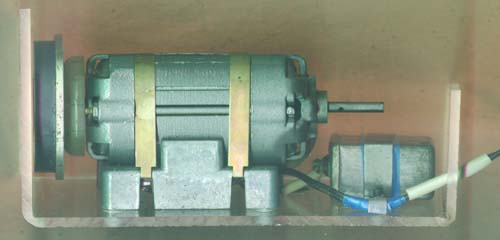
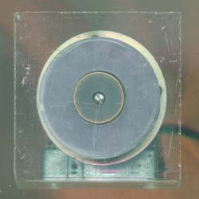
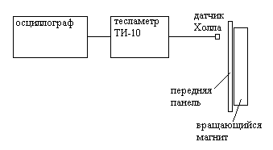
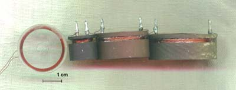
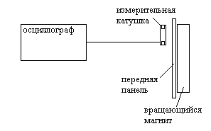

Генератор бегущего (вращающегося)
магнитного поля


Рис. 1. Генератор вращающегося магнитного поля: вид сбоку, вид
спереди (макетный вариант).
Генератор вращающегося магнитного поля представляет из себя
постоянный кольцевой шестиполюсный магнит из феррита бария, закрепленный на оси
электродвигателя. Направление намагниченности - аксиальное. Электродвигатель
типа ДКС-1-У4 (скорость вращения 2750 оборотов в минуту) установлен на
П-образном шасси, согнутом из оргстекла (полиметилметакрилат). Передняя панель
шасси служит для предохранения от механического контакта с вращающимся магнитом.
Для контроля магнитной индукции использовался аналоговый
импульсный тесламетр [1]. Схема измерения магнитной индукции показана на рис. 2.

Рис. 2. Схема измерения магнитной индукции.
Частота изменения магнитного поля около 140 Гц. Амплитуда
магнитной индукции на расстоянии 10 мм от передней панели 18 мТл, вблизи
передней панели 70 мТл.
Для измерения напряженности индуцированного вихревого
вращающегося электрического поля использовались измерительные катушки, внешний
вид которых показан на рис. 3.

Рис. 3. Измерительные катушки различных типоразмеров.
Измерительная катушка представляет из себя цилиндрический
каркас с узкой прорезью. В прорезь наматывается 1 метр провода. Радиус каркаса
(с учетом размеров прорези и обмотки) равен радиусу контура, на котором
необходимо производить измерения электрической напряженности. При этом
электродвижущая сила (ЭДС) катушки, возникающая за счет изменения магнитного
потока, проходящего через ее сечение, численно равна электрической напряженности
индуцированного электрического поля (точнее говоря, интегралу от электрической
напряженности по контуру, т. е. усредненному значению напряженности). Измерение
ЭДС можно производить с помощью осциллографа или вольтметра переменного
напряжения. Схема измерения электрической напряженности показана на рис. 4.

Рис. 4. Схема измерения напряженности индуцированного
электрического поля.
Амплитуда электрической напряженности на расстоянии 10 мм от
передней панели 50 мВ/м, вблизи передней панели - около 200 мВ/м.
Намагничивание постоянного магнита производилось с помощью
установки импульсного намагничивания [5] в составе
устройства намагничивающего импульсного 6-полюсного аксиального [6]
и генератора мощных импульсов тока [2, 3].
Увеличивая число полюсов магнита, скорость его вращения, а
также применяя магниты с большей энергией (самарий-кобальт, неодим-железо-бор),
можно добиться существенного (на порядок и более) увеличения напряженности
индуцированного электрического поля. Возможно также в некоторых случаях
исключать внешний привод, используя сам многополюсный магнит в качестве ротора
бесколлекторного двигателя.
Возможные применения:
- Устройства для размагничивания стальных изделий, в том
числе массивных, с большой поверхностью.
- Конструирование магнитных муфт.
- Испытания электромагнитных узлов электрогенераторов.
- Индукционный нагрев токопроводящих объектов.
- Физиотерапевтическое воздействие на организм человека.
Ссылки:
- Аналоговый импульсный
тесламетр с датчиком Холла типа ПХЭ для измерения индукции магнитного поля
- Генератор мощных
импульсов тока однополярный
- Генератор мощных импульсов
тока (емкостной накопитель энергии)
- Постоянные магниты: Справочник / Альтман А. Б., Герберг
А. Н., Гладышев П. А. и др.; Под ред. Ю. М. Пятина. - 2-е изд., перераб. и
доп. - М.: Энергия, 1980. - 488 с., ил.
- Установки
импульсного намагничивания и размагничивания постоянных магнитов
- Устройство для 6-полюсного
аксиального импульсного намагничивания ферритовых колец диаметром до 70 мм
Словарь
терминов:
- Двигатель (мотор) - преобразователь
энергии источника в механическую энергию движения.
- Демагнетизатор
- устройство (установка) для размагничивания.
- Магнитная индукция - вектор, численно
равный пределу отношения силы, действующей со стороны магнитного поля на
элемент проводника с электрическим током, к произведению тока и длины
элемента проводника, если длина этого элемента стремится к нулю, а элемент
так расположен в поле, что этот предел имеет наибольшее значение, и
направленный перпендикулярно к направлению элемента проводника и к
направлению силы, действующей на этот элемент со стороны магнитного поля,
причем из его конца вращение по кратчайшему расстоянию от направления силы к
направлению тока в элементе проводника должно быть видно происходящим против
часовой стрелки.
- Многополюсный магнит - постоянный
магнит, имеющий более одной пары магнитных полюсов.
- Напряженность электрического поля -
сила, действующая со стороны электрического поля на единичный положительный
точечный электрический заряд.
- Неодим-железо-бор
(англ. Ne-Fe-B) - магнитотвердый материал на основе соединения железа,
неодима и бора состава Nd2Fe14B, Nd3Fe16B,
Nd4Fe28B3.
- Размагничивание
- процедура, позволяющая уменьшить остаточную намагниченность образца до
таких значений, когда ею можно пренебречь.
- Самарий-кобальт
(англ. Sm-Co) - магнитотвердый материал на основе интерметаллического
соединения самария и кобальта состава SmCo5. В обозначении марки
(например, КС37) буквы обозначают состав (К - кобальт, С - самарий), а число
(37) - процентное содержание самария.
- Тесламетр (гауссметр) - прибор для
измерения магнитной индукции.
- Феррит бария - магнитотвердый материал
на основе окислов железа и бария состава BaO·6Fe2O3. В
обозначении марки (например, 19БА190) первое число (19) обозначает
энергетическое произведение (в кА·Тл/м), первая буква - состав феррита (Б -
бариевый), вторая буква - свойства (А - анизотропный, И - изотропный),
второе число (190) - коэрцитивную силу по намагниченности (в кА/м).
- Электродвижущая сила (ЭДС) - работа
создающих электрический ток сил по перемещению единичного положительного
электрического заряда вдоль рассматриваемого участка электрической цепи.
27.04.2004
09.09.2005
22.06.2010
Альтернативные источники
энергии
Компьютеры и
Интернет
Магнитные поля
Механотронные системы
Перспективные
разработки
Электроника и
технология
Главная страница